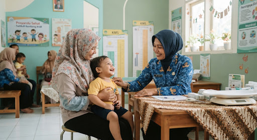

Pendaftaran Terbuka • Hari Ini
Selamat Datang di Posyandu Desa Sukamaju
Sistem mandiri pengambilan nomor antrian ramah ibu dan balita. Ambil nomor antrian secara cepat, tertib, dan pantau giliran secara real-time.
schedule
Jam Layanan
08:00 - 12:00 WIB
confirmation_number
Status Antrian
Memuat antrian...
error
Pesan pemberitahuan sistem.
how_to_reg
Form Registrasi Antrian
Lengkapi data untuk mencetak tiket giliran Anda
1
Ambil Tiket
Isi form & dapatkan nomor
2
Ruang Tunggu
Duduk santai di Meja 1
3
Pemeriksaan
Dilayani bidan & kader
confirmation_number
Nomor Antrian Anda
Posyandu Balita Sehat
Desa Sukamaju RW 04
KODE PEMANGGILAN
-
-
Nama Pasien:
-
Waktu Cetak:
-
Lokasi Pelayanan:
Meja 1 & Meja 2 (Pelayanan Posyandu)
hourglass_top
Menunggu giliran antrian...
POS-SUKAMAJU-2026
qr_code_scanner
Valid Mandiri

child_care
Generasi Emas Bebas Stunting
lightbulb Tips Kunjungan Posyandu Hari Ini
Edukasi Ibu
menu_book
Bawa Buku KIA / KMS Pink:
Pastikan buku kesehatan ibu & balita diserahkan ke Meja 1 untuk pencatatan grafik KMS terkini.
restaurant
Pemberian Makanan Tambahan (PMT):
Setelah pemeriksaan tuntas, ambil paket kudapan padat gizi kaya protein hewani di loket PMT.
vaccines
Kondisi Balita Sehat:
Beritahu petugas bila anak mengalami demam sebelum jadwal suntik imunisasi rutin.
support_agent
Butuh Pendampingan Khusus?
Ibu hamil risiko tinggi & bayi baru lahir dapat langsung melapor ke Kader Meja 1 tanpa antrian lama.